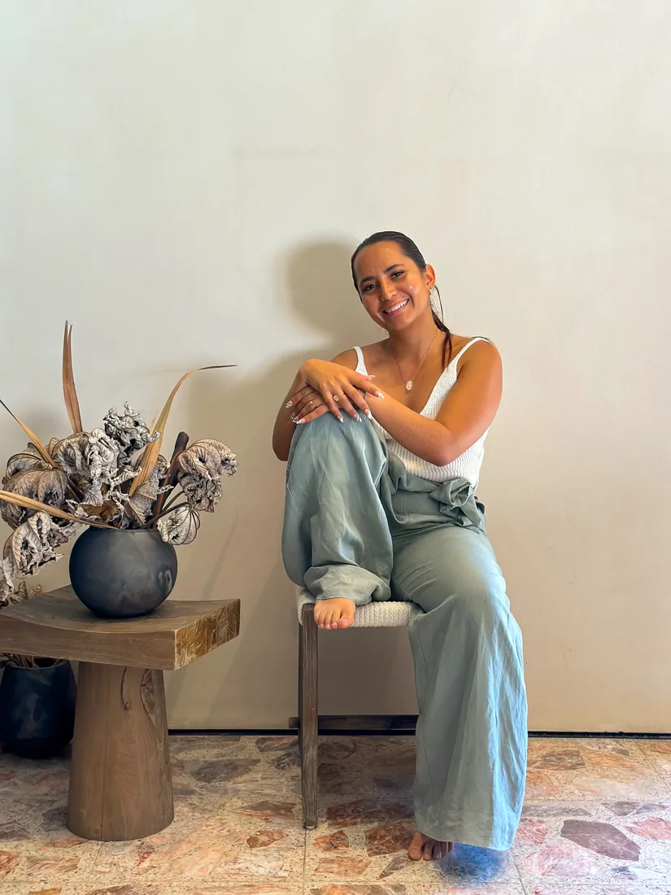
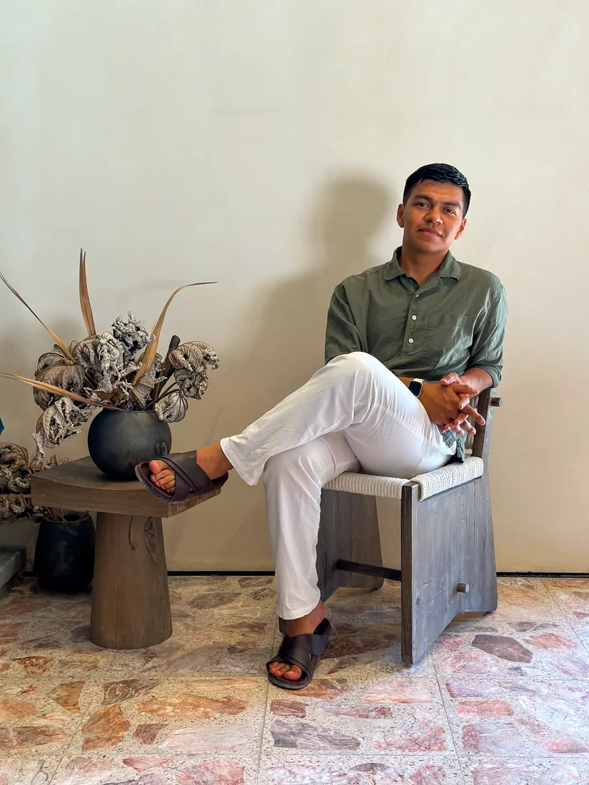
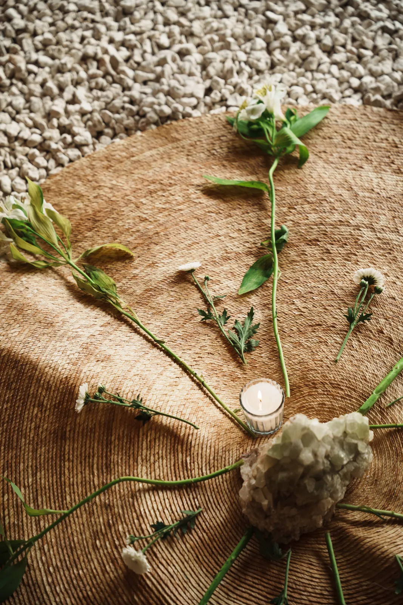

Quiénes te reciben
Detrás deExperimental.
Ver quién te recibe baja mucho la barrera para escribir. Estas son las personas y el lugar que cuidan cada episodio para que tú solo tengas que llegar.

Andrea
Anfitriona
Descripción por llegar: Andrea y Pablo nos comparten unas líneas sobre quiénes son y qué aporta cada uno a la experiencia. Espacio reservado para su bio.

Pablo
Anfitrión
Descripción por llegar: aquí irá una o dos líneas sobre Pablo, quién es y qué aporta a cada encuentro. Espacio reservado para su bio.
El lugar · Hosted by Casa Ixum
Casa Ixum
Cada episodio sucede en Casa Ixum: un espacio que invita tanto al viajero como al local a sentirse en casa, donde se encuentran hospedaje, gastronomía, arte y cultura. Arquitectura rural con alma urbana y tropical, pensada para desconectar del mundo y estar presente.
- Hospedaje: un refugio tranquilo, urbano y tropical.
- Cocina: gastronomía global con toque local.
- Terraza de ocio, tienda y taller, y un espacio Art & Collab.
- Un mismo lugar para reunir cultura, música, bienestar y comunidad.

¿Nos conocemosen el próximo episodio?
Escríbenos por Instagram y te contamos todo del siguiente encuentro.